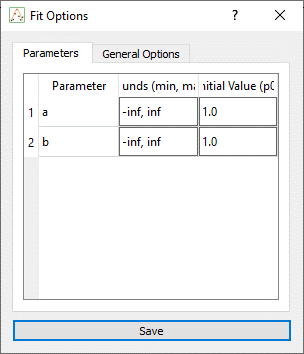
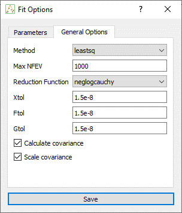
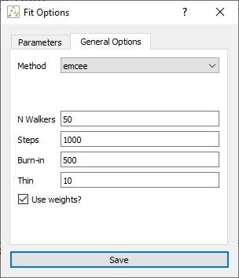

Fit Options
The Fit Options dialog lets you configure all aspects of the fitting process, including method selection, parameter bounds, initial values, and optimizer-specific settings.
It is automatically populated from the current formula, extracting each parameter symbolically and allowing you to customize how each is treated during the fit.
Fit Method
In the General Settings section, you can choose one of the following fitting methods:
-
Levenberg-Marquardt (leastsq)): Fast and commonly used for least-squares minimization.
-
Orthogonal Distance Regression (odr): Useful when both
xandyhave associated uncertainties. -
MCMC (emcee): Bayesian sampling using Markov Chain Monte Carlo, returning posterior distributions.
Each method enables different controls and outputs.
Parameters Table
This table lists all parameters extracted from the current formula. For each parameter, you can define:
| Setting | Description |
|---|---|
| Initial Value | Starting guess used to initialize the fit |
| Min / Max | Lower and upper bounds (e.g., 0 to 10) |
These values are passed to the backend fitting engine and directly influence convergence.

Optimizer-Specific Settings
Below the parameter table, method-specific options appear based on the selected algorithm.
Levenberg-Marquardt (leastsq)
| Option | Description |
|---|---|
calc_covar |
Whether to compute the covariance matrix |
scale_covar |
Whether to rescale the covariance output |
xtol / ftol / gtol |
Tolerances for convergence |

These settings are passed to scipy.optimize.leastsq() via lmfit.
MCMC (emcee):
| Option | Description |
|---|---|
nwalkers |
Number of walkers (MCMC chains) |
steps |
Total number of sampling steps |
burn |
Burn-in steps to discard from the beginning |
thin |
Thinning factor to reduce autocorrelation |
is_weighted |
Whether to include y_err or sigma in the likelihood |

These options control the behavior of the emcee.EnsembleSampler.
Notes
-
The table updates automatically if the formula changes.
-
Bounds and initial values are used by all fit methods, including MCMC priors.
-
The fit options are saved per tab and reloaded when reopening a fit.